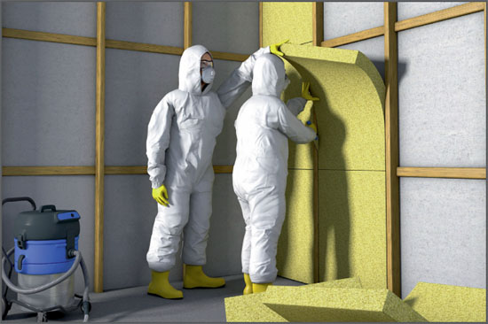

Alte Mineralwolle-Dämmstoffe Glaswolle, Steinwolle mit krebsverdächtigen Eigenschaften

Gefährdungen
Bei Demontage-, Abbruch-, Instandhaltungs- und Instandsetzungsarbeiten besteht grundsätzlich ein Krebsverdacht, wenn die Mineralwolle-Produkte vor dem Jahr 2000 eingebaut wurden.
Allgemeines
"Alte" Produkte
Seit dem 1.6.2000 dürfen "alte" Mineralwolle-Dämmstoffe nicht mehr verwendet werden. Durch das Verwendungsverbot darf es in Deutschland den Umgang damit nur noch im Zuge von Demontage-, Abbruch-, Instandhaltungs- und Instandsetzungsarbeiten geben.
Im Rahmen der Gefährdungsbeurteilung ermitteln, ob es sich bei der in Frage stehenden Mineralwolle um "alte", also krebsverdächtige Produkte handelt.
Tätigkeiten mit alten Dämmstoffen in das Gefahrstoffverzeichnis aufnehmen (einmalig unternehmensbezogen).
Die TRGS 521 und die DGUV Information 213-031 liefern eine Auflistung von Tätigkeiten mit den entsprechenden Expositions kategorien. Die erforderlichen Schutzmaßnahmen bei diesen Tätigkeiten sind gestaffelt und orientieren sich an der Höhe der Faserstaubbelastungen am Arbeitsplatz sowie der Dauer und Häufigkeit der Arbeiten.
Schutzmaßnahmen
Die Maßnahmen der jeweiligen Expositionskategorie sind nachfolgend aufgeführt:
Expositionskategorie E1
Für Tätigkeiten mit keiner oder nur sehr geringer Staubexposition, z. B. Arbeiten an Innenwänden (Trennwänden, Vorsatzschalen) ohne Demontage des Dämmstoffes, Öffnen einzelner Abschnitte von weniger als 3 m2, Arbeiten an schwimmend verlegtem Estrich mit Demontage von weniger als 3 m2 Dämmstoff.
Maßnahmen
Material nicht reißen.
Motorgetriebene Sägen nur mit Absaugung beim Ausbau verwenden.
Ausgebautes Material nicht werfen.
Für gute Durchlüftung am Arbeitsplatz sorgen.
Aufwirbeln von Staub vermeiden.
Arbeitsplatz sauber halten und regelmäßig mit Staubsauger der Staubklasse M reinigen.
Stäube mit Industriestaubsauger (mindestens Staubklasse M) aufnehmen bzw. feucht reinigen, nicht mit Druckluft abblasen oder trocken kehren.
Entstauber bzw. Industriestaubsauger regelmäßig warten und instandhalten.
Abfälle am Entstehungsort möglichst staubdicht verpacken und kennzeichnen. Für den Transport geschlossene Behältnisse (z. B. Tonnen, reißfeste Säcke, Big-Bags) verwenden.
Locker sitzende, geschlossene Arbeitskleidung und z. B. nitrilbeschichtete Baumwollhandschuhe tragen.
Nach Beendigung der Arbeit Staub auf der Haut mit Wasser abspülen.
Bei empfindlicher Haut nach Arbeitsende Hautpflegemittel verwenden.
Betriebsanweisung erstellen.
Beschäftigte unterweisen.
Expositionskategorie E2
Für Tätigkeiten mit geringer bis mittlerer Staubexposition, z. B. Arbeiten an Wärmeverbundsystemen mit Freilegen des Dämmstoffes, Demontage thermisch belasteter Anlagenteile im Freien von nicht mehr als 20 m2.
Maßnahmen
Alle Maßnahmen der Expositionskategorie E1 ergreifen und zusätzlich:
Faserstäube direkt an der Austritts- oder Entstehungsstelle z. B. mit einem Luftreiniger erfassen, soweit dies möglich ist.
Entstauber bzw. Industriestaubsauger regelmäßig warten und instandhalten.
Begrenzung der Anzahl der Beschäftigten durch organisatorische Schutzmaßnahmen.
Den Beschäftigten auf Wunsch persönliche Schutzausrüstung zur Verfügung stellen:
Atemschutz:
Halb-/Viertelmaske mit P2-Filter oder
partikelfiltrierende Halbmaske FFP2 oder
Filtergerät mit Gebläse TM 1P,
Schutzbrille insbesondere bei Überkopfarbeiten,
Schutzanzug Typ 5.
Arbeitsmedizinische Vorsorge anbieten.
Arbeitsbereiche abgrenzen und kennzeichnen.
Schwer zu reinigende Gegenstände oder Einrichtungen mit Folien abdecken.
Rauch-/Schnupfverbot am Arbeitsplatz, Verbot der Nahrungsaufnahme.
Waschmöglichkeit vorsehen.
Expositionskategorie E3
Für alle Tätigkeiten mit hoher bis sehr hoher Staubexposition, z. B. umfangreichere Sanierungsmaßnahmen mit Demontage des Dämmstoffes (Deckenverkleidungen, Unterdecken), Demontage von thermisch belasteten Anlagen oder Anlagenteilen in engen, schlecht belüfteten Räumen.
Maßnahmen
Alle Maßnahmen der Expositonskategorie E1 und E2 ergreifen und zusätzlich:
Beschäftigungsbeschränkung für Jugendliche und Schwangere.
Persönliche Schutzausrüstung muss getragen werden:
Getrennte Umkleideräume für Straßen- und Arbeitskleidung,
Waschraum mit Duschen (Schwarz-Weiß-Anlage) bereitstellen.
Arbeitsmedizinische Vorsorge
Arbeitsmedizinische Vorsorge nach Ergebnis der Gefährdungsbeurteilung veranlassen (Pflichtvorsorge) oder anbieten (Angebotsvorsorge). Hierzu Beratung durch den Betriebsarzt.